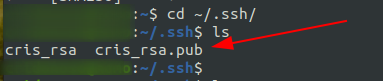
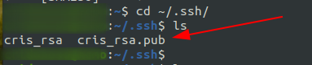
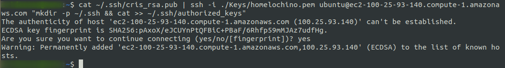
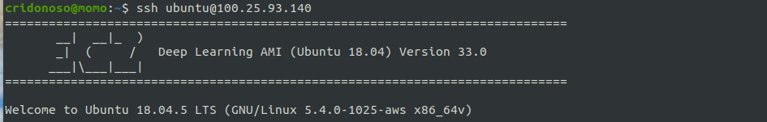

Public SSH Key on your Server
Last weekend, I reinstalled Linux on my laptop, losing all configuration that I had. As you probably think, it is a perfect opportunity for writing new tutorials related to my workspace customization.In this post, I'll explain how to set up your public key on your server (I guess you don't have a server, but at least you have access to one of them). Okay, so we need to understand what "servers" and "public keys" are.
A server is a computer running somewhere typically outside your laptop like the Cloud. However, the Cloud is a collection of servers working together to offer services. Anycase, the Cloud is on the ground so that you can create your handmade server with your old desktop pc.
For security, we need keys to access the servers. There are many ways to configure permission policies, such as simple passwords or public-key cryptography -of course, you may not use keys, but I don't recommend it.
The public-key is secure and easy to configure. Once you have your public key, you are ready to share it with the server administrators. At this moment, you are probably wondering: if I have a public-key, where is the private one?. When you generate your public-key, you also create the private one in charge of decrypting information encoded with your public key. Look at this video for more information
Creating my public key
Before anything, you need the Secure Shell (SHH) protocol installed. SSH allows us to access a remote server through encrypted communication. Fortunately, the latest Linux distributions already have ssh installed.To generate your private-public pair key type:
ssh-keygen Once we have done the last step, you will see your public and private keys on your selected directory.

Once we have done the last step, you will see your public and private keys on your selected directory.

Copying public key on a Server
If you are not the server administrator, pass your password to the administrator, and the tutorial is over. If not, you have to put the public key in theautorized_keys file of your server.
For example, I have an AWS instance where I usually run my algorithms. To register my laptop as an authorized user, I have to run the following command:
cat ~/.ssh/cris_rsa.pub | ssh -i ./Keys/homelochino.pem ubuntu@ec2-100-25-93-140.compute-1.amazonaws.com "mkdir -p ~/.ssh && cat >> ~/.ssh/authorized_keys"| pipe symbol connects the left command
with the right one sequentially without losing the first one output.
Then we access to the server with ssh
and type the command mkdir -p ~/.ssh && cat >> ~/.ssh/authorized_keys
which concatenates the content of cris_rsa.pub
to the ~/.ssh/authorized_keys file

Accessing your Server
Finally, just log in to your server as follow:ssh ubuntu@100.25.93.140
